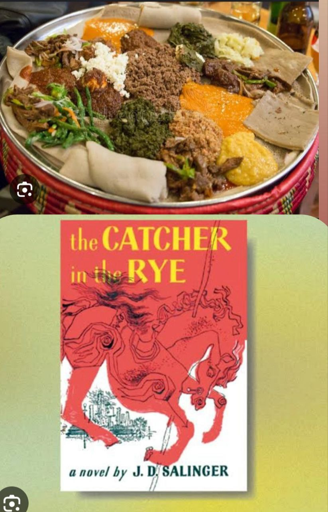

Adventure
During my adventure, I explored a beautiful forest filled with tall trees and colorful flowers. I followed a winding path that led me to a sparkling river. Along the way, I saw birds singing in the branches . It felt amazing to be surrounded by nature, and I took a moment to enjoy the peaceful sounds around me. This my adventure video, where I take you on a journey through breathtaking landscapes .
This adventure made me feel happy and free.
Hobbies
"I enjoy reading books, cooking food, and watching movies. Reading takes me to different worlds and teaches me new things. Cooking allows me to create delicious meals and express my creativity. Watching movies is a way for me to relax and enjoy stories. These hobbies make my life more fun and interesting.
